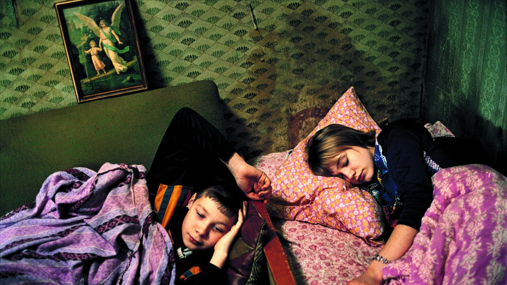
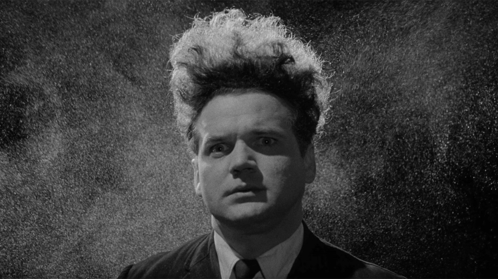
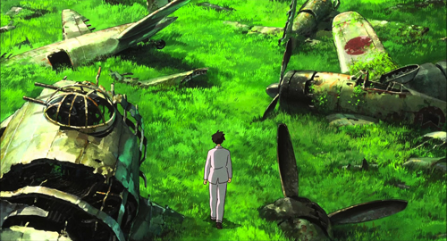
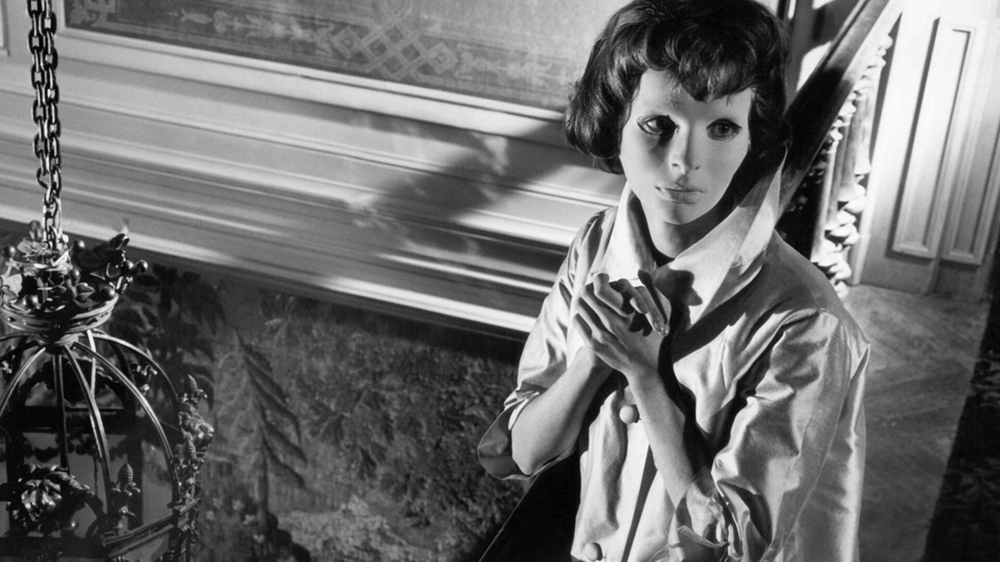
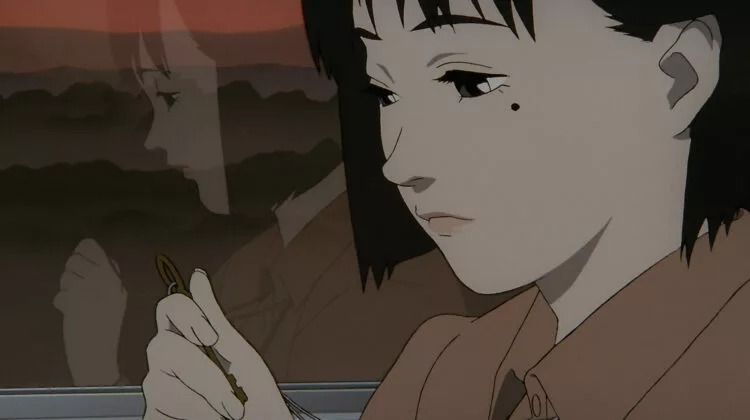

Top 5 Filmes
O cinema no geral e todo o esforço e trabalho associado a ele para chegar a um resultado final sempre me fascinou. A maneira como um bom filme nos consegue marcar para toda a vida faz do cinema sem dúvida um dos meios de comunicação mais poderosos e belos, sendo, naturalmente, uma das minhas maiores paixões. Nesta secção do site, mostrarei alguns dos meus filmes preferidos sem uma ordem em específico, bem como alguns comentários sobre os mesmos.
Lilya 4-Ever
Realizado por Lukas Moodysson, este filme basea-se na história verídica de Danguole Rasalaite e aborda temas pesados como o tráfico humano e escravidão sexual a qual inúmeras mulheres foram submetidas. Através de uma representação muito dura, é nos apresentada a vida de Lilya, uma jovem de 16 anos que, após ser abandonada na Rússia pela mãe, fica isolada e vive em condições terríveis. Junto com o seu amigo Volodja, ela procura uma vida melhor e está disposta a tudo para a conseguir. A certa altura, tudo parece estar a ficar melhor para Lilya, mas rapidamente se descobre que a felicidade dela não iria durar muito.
Eraserhead
Realizado por David Lynch em 1977, Eraserhead é um filme... Peculiar. Através de uma representação muito abstrata e surrealista, David Lynch mostra a vida de Henry Spencer e a deterioração do seu estado mental após a sua esposa dar à luz a um bebé mutante e desfigurado. O filme está repleto de elementos de Terror Corporal, bem como uma linha muito ténue entre a realidade e o sonho, que deixam uma permanente tensão no espectador. Eraserhead, na minha visão, retrata de uma forma brilhante e metafórica as dificuldades e o medo que Henry sente em relação ao seu papel de pai.
The Wind Rises
Um belo e poético filme de Hayao Miyazaki, realizado em 2013. Sendo um enorme fã de animação japonesa, não puderia deixar de fora aquele que considero um dos filmes mais belos de sempre, que me ofereceu um dos maiores motes para a vida: "The wind is rising, we must try to live". O filme aborda de forma biográfica a vida e obra de Jiro Horikoshi, um engenheiro aéreo Japonês que viveu durante o período da segunda guerra mundial e foi responsável pela criação de vários caças Japoneses durante esse período, principalmnte o "Zero", o mais mortífero e aterrador. Apesar de abordar a o conflito, The Wind Rises é um filme Anti-Guerra, que mostra subtilmente ao espectador as consequências devastadoras da mesma.
Eyes Without a Face
Um clássico do terror francês realizado por Georges Franju em 1960. O filme combina o suspanse e a poesia com uma história tocante e macabra, também focando-se muito em aspectos do Terror Corporal. Nele, é nos apresentada a história de um cirurgião que sequestra mulheres de modo a dar à sua filha uma nova cara, depois do mesmo ter sido responsável por um acidente que a deixou desfigurada. O filme aborda temas como a culpa, a identidade e a obsessão que levaram o cirurgião ao extremo.
Millennium Actress
Uma homenagem ao cinema japonês que mistura nostalgia e emoção com uma narrativa criativa e cativante. Realizado por Satoshi Kon em 2001, o filme acompanha dois documentaristas na tentativa de obter uma entrevista com Chiyoko Fujiwara, uma famosa atriz que acabou a carreira precocemente e sem explicação alguma. O filme aborda o impacto da história pessoal na criação artística, bem como a incapacidade de superação revelada por Chiyoko, que preferiu encontrar numa possibilidade infíma e de uma procura infindável por algo que nem ela sabe ao certo, a sua razão para viver.